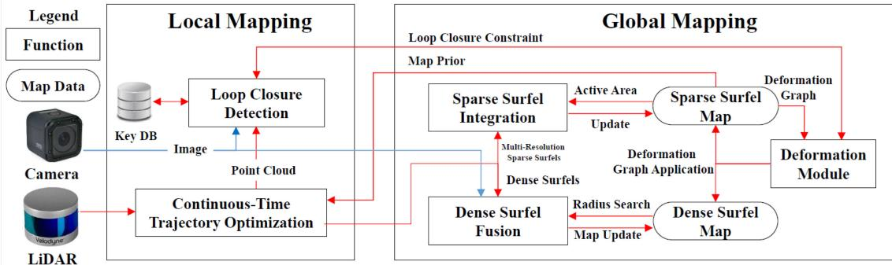
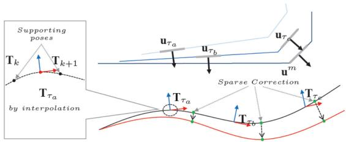
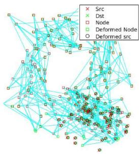

标题里的 Elasticity（弹性） 是本节最容易误读的点，务必先讲清。摘要说：Map-centric SLAM utilizes elasticity as a means of loop closure（地图中心 SLAM 把弹性当作回环闭合的手段）。更准确地说，它把全局优化里「时间上的依赖」转成了「空间上的依赖」——具体实现是一个形变图（deformation graph）：回环时对整个地图做非刚性加权形变，而不是去改位姿。
原文：does not maintain any trajectory（不维护任何轨迹）。回环靠形变地图。代价：传感器数据历史不能存，the map is not recoverable（地图不可逆），且有 growing distortion（畸变随地图长大）。
轨迹中心（trajectory-centric）
主流做法。回环靠位姿图（pose graph）调整关键帧位姿。地图只是位姿的副产品。

原图注（Fig. 3）：System block diagram of our method (named ElasticLiDAR++). The device local trajectory is tracked in the local mapping stage, while the global consistent map is maintained in the second global mapping stage.（方法（名为 ElasticLiDAR++）的系统框图。设备局部轨迹在局部建图阶段跟踪，全局一致地图在第二个全局建图阶段维护。） 怎么看这张图：这是全文骨架图。上半「局部建图」用 CT 跟踪设备轨迹；下半「全局建图」才用到 elasticity——回环一来，就通过形变图把全局地图拉一致。注意两条流水线分开了：轨迹是局部的、短期的，地图是全局的、可被形变的。这正是 map-centric 的工程样子。
3. 论文 A：direct vs composition 与关键公式
在 CT 里把轨迹和地图绑在一起，原文 §II-C2 给了两种范式，请做成对照：
direct（直接法）
直接优化样条的控制点本身。简单，但控制点就是最终轨迹，每轮都从「整条曲线」出发，容易碰到奇异性。
composition（组合法）
保留离散位姿，只优化一个低频修正量。本文选它并改进：修正量用三次 B 样条平滑、在 SE(3)（位姿流形）上更新。每轮从「零修正」出发，无奇异性。
第一条 $r_I$ 是 surfel-to-surfel（面元对面元）约束：surfel 是「surface element（面元）」——点云里一个带法向的小面片。$u_{\tau_a},u_{\tau_b}$ 是局部窗内两个不同时刻生成的面元，要求它们在各自插值位姿下「贴平」（法向 $n_{ab}$ 方向上距离近）。第二条 $r_M$ 是 map prior（地图先验）约束：局部扫描面元 $u_{\tau_c}$ 要贴到已有地图面元 $u^m$ 上。原文明说：The motion distortion is corrected based on the map prior——这正是 map-centric 与 CT 的耦合点，也是本文最漂亮的一步。

原图注（Fig. 4）：Illustration of geometrical constraints on the local trajectory. Two surfels $u_{\tau_a}$ and $u_{\tau_b}$ generated at $\tau_a,\tau_b$ within a local window forms constraints on the interpolated trajectory poses $T_{\tau_a}$ and $T_{\tau_b}$. The constraint between the local scan $u_{\tau_c}$ and the map prior $u^m$ forces the trajectory to be fitted onto the map prior.（局部轨迹上的几何约束示意。……局部扫描 $u_{\tau_c}$ 与地图先验 $u^m$ 之间的约束把轨迹「拉」到地图先验上。） 怎么看这张图：它把式(3)(4) 画了出来。关键点：同一帧里 $\tau_a,\tau_b$ 两个不同时刻的点，各自对插值轨迹位姿 $T_{\tau_a},T_{\tau_b}$ 构成约束——这正是「帧内不再假设匀速」的直观表达（接 0016 的连续时间去畸变）。右侧 $u_{\tau_c}$ 被 map prior $u^m$ 拉住，就是 $r_M$ 的几何画面。
Table II：同样 66 个状态，composition + SE(3) 做到平移 10.3 mm / 旋转 $1.2\times10^{-3}$ rad，而 spline-direct 只有 103.0 mm / $93.7\times10^{-3}$ rad；spline-direct 加到 101 个控制点（606 状态）也只是 23.1 mm / $5.1\times10^{-3}$ rad。原因：composition 优化的是「修正量」，每轮从零出发、无奇异性。这打破了「控制点越多越准」的直觉。
全栈仿真 12.3 mm vs [3] 的 35.3 mm。
真实轨迹 RMSE 0.173–0.552 m（最大 60×69 m 规模）。
平面估计位置误差 3.2–4.5 mm vs CT-SLAM 8.0–9.4 mm（约 3 倍更少噪声）。
回环定位最难情形 6 cm / 0.004 rad，而 Sparse ICP 2.52 m / 2.42 rad、Open3D 13.8 m、SHOT 7.59 m。
耗时 2.1 s / 每秒数据（Matlab 单线程）。

原图注（Fig. 12(b) 所在总注）：(a) Scanning path: Our proposed method closes a loop at (i) whereas trajectory-based SLAM does at (ii).（扫描路径：本方法在 (i) 处闭合回环，而基于轨迹的 SLAM 在 (ii) 处闭合。） 怎么看这张图：这是 elasticity 的实体——形变图节点如何吸收回环误差。基于轨迹的 SLAM 要在 (ii) 处「把位姿图掰弯」来闭合回环；本文在 (i) 处直接通过形变图把地图拉一致，位姿不动。图里那些被拉拽的地图节点，就是「elasticity = 地图可被拉拽」的视觉证据。
明确局限（论文 A）
① growing map distortion：原文 The distortion in the 60-m scale map reached to 10 cm，地图越大畸变越大。
② partial observation problem：局部重访重叠不足 → 不触发形变 → 整体结构漂移约 0.1 m。
③ 非高斯重复噪声（mixed pixel，多来自静止扫描）融合无效。
④ 分辨率约束：小于设定分辨率的小物体被忽略，分辨率过高算力骤增（0.02 m or higher resolution were acceptable）。
⑤ 回环平移误差（6 cm）仍大于重建精度（<1 cm）。
⑥ 时偏标定在「退化场景如宽大无纹理室外」仍很难。
⑦ 局部图并入全局时忽略了重力对齐。
5. 论文 B：实时性 + 固定延迟平滑
论文 B 要同时解两个障碍。① 实时性：CT 残差里的位姿由多个控制点拼出，状态与雅可比复杂度都上升，原文 Existing continuous-time odometry methods rarely achieve real-time performance。② 固定延迟平滑缺失：离散法普遍用滑窗 + 边缘化（marginalization，把旧状态的信息「压」成先验保留，而不是丢掉）保住旧测量信息，而 continuous-time methods like VIO or LIO rarely consider how to preserve information of old measurements/states，直接丢信息。本文同时解这两个。
★ fixed-lag smoothing 是什么（串起前面几节）
原文并不给 filtering / full smoothing / fixed-lag 的教科书三方对照，而是对比「有无边缘化」：DT 法用 fixed-lag + 边缘化；CT 法常常丢信息。本方案 = 「constant size of sliding window（定长滑窗）」+「probabilistically marginalize out control points（概率性地边缘化掉轨迹控制点和其他状态）」。配合 0029 的框架：full smoother / fixed-lag smoother / filter 三者里，fixed-lag 就是「只保留最近一段、旧的全边缘化」——本文正是把它搬进 CT。
★ 它与预积分的关系（务必对照 0030）
原文 II-A 明说离散法 widely adopt preintegration technique, which integrates high-rate IMU data into a low-rate preintegration factor（普遍用预积分，把高频 IMU 积成低频因子）；而 CT 法 naturally couple raw IMU measurements in the batch optimization（把原始 IMU 直接塞进批量优化）。本文的 IMU 因子不需要预积分。一句话对照：预积分是为了在离散框架里省事，而连续时间框架下这个补丁不需要了。另注：本文属于紧耦合（IMU/LiDAR/相机在同一个因子图里联合优化，而非各自算完再松耦合拼接），正好接第一季第 0006 课讲过的「松耦合 vs 紧耦合」。
6. 论文 B：双滑窗、公式与边缘化
双滑窗（实现巧思）：LI 时间滑窗（常数时长 $\eta\Delta t=0.12$ s，$\Delta t=0.03$ s ⟹ $\eta=4$）+ 视觉关键帧滑窗（常数量 10 帧）。只有 LI 时间窗内的 active 控制点参与优化，其余控制点 involved in the optimization but kept static（参与但保持不变）。
原图注（Fig. 4）：Involved measurements from IMU (blue block) and LiDAR (green block) sensors in a temporal sliding window in $[t_{\kappa-1},t_\kappa)$, and measurements of camera (yellow block, keyframes denoted by arrows) in a keyframe sliding window. The active trajectory segment... is within the LI temporal sliding window.（IMU（蓝）与 LiDAR（绿）在一个时间滑窗内的测量，相机（黄，关键帧用箭头标）在关键帧滑窗内；待优化的 active 轨迹段位于 LI 时间滑窗内。） 怎么看这张图：它解释「双滑窗不同步」这一实时性关键取舍——IMU/LiDAR 按时间滑窗（蓝绿），相机按关键帧滑窗（黄，箭头是关键帧）。只有落在 LI 时间窗里的控制点才被优化，其他固定。这就是「为实时只动一小段」的直观图。
原文：we can optimize the continuous-time trajectory by raw IMU measurements directly, avoiding the efforts of IMU propagation or preintegration。另有 bias 随机游走因子。
原图注（Fig. 2）：(a) A typical factor graph of LI system fusion. (b) A typical factor graph of LIC system fusion. Active control points are to be optimized, while static control points remain constant... (c) After marginalization of (b), the induced prior factor is involved with the latest control points, latest bias and timeoffsets.（(a) LI 系统因子图。(b) LIC 系统因子图；active 控制点待优化，static 控制点保持不变……(c) 对 (b) 做边缘化后，导出的先验因子与最新控制点、最新偏置和时偏相关。） 怎么看这张图：这是本节头号图。把它和 0020 课讲过的「节点—边」图放一起看：(b) 里粗的是 active 控制点（待优化）、细的是 static 控制点（固定）；(c) 是边缘化后多出来的先验因子（虚线），它把被丢掉的老信息「压缩」保留下来，连着最新控制点、偏置和时偏。这就是 fixed-lag smoothing 的因子图长相。
原图注（Fig. 11）：Temporal calibration error of CLIC system in NCD_01 sequence... Although we start from various initial values of timeoffsets, the estimates of timeoffsets are able to quickly converge.（CLIC 系统在 NCD_01 序列上的时间标定误差……虽然从各种时偏初值出发，时偏估计都能快速收敛。） 怎么看这张图：它把上一节 0031「CT 天然能估时偏」的结论，从批量搬到了在线滑窗。无论初值是正是负，时偏估计都在约 3 s 内收敛到 −2.0 ms（std 2.7 ms）。注意这发生在固定延迟的实时系统里——说明 CT 的时偏红利在在线场景照样成立。